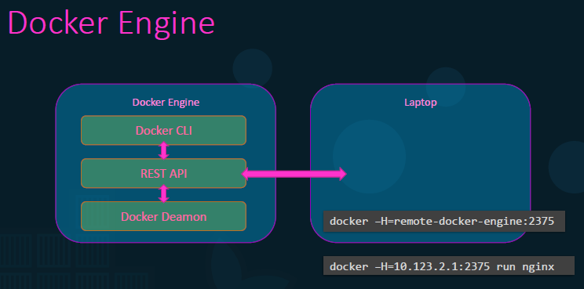

https://docs.docker.com/config/containers/resource_constraints/
Generalmente, Docker Engine è riferito all'host sul quale gira Docker.
Su un Docker Engine vengono installare 3 cose:
- Docker CLI: CLI per usare e gestire Docker
- REST API: Sono delle API che i programmi possono usare per interagire col Docker Daemon
- Docker Daemon: Per far girare il servizio Docker. Gestisce container, volumi, network ed images
NB: La Docker CLI può essere anche su un host diverso!
Per questo possiamo usare l'opzione -H per specificare l'host e la porta del Docker Engine.

Quindi: Come funziona la Containerizzazione in Docker?
Docker utilizza dei namespace per isolare i workspace.
Questo permette di creare Isolation tra i container.

Vediamone una: Process ID Namespace.
I Sistemi Linux generalmente iniziano con un processo dal PID 1.
Il PID:1 è il processo che avvia tutti gli altri processi.
Quello che sappiamo è questo:
I processi che runnano su un Container in verità runnano sull'Host dove si trovano.
Per questo possiamo usare PID come 1 ma solo nel Child System (Container).
In questo caso i namespace ci possono essere utili.

Sappiamo inoltre che i Container fanno share delle risorse dell'Host, come CPU e Memoria.
Di base, non vi è nessun limite alle risorse che possono essere usare dai Container.
Docker usa i cgroups per limitare l'utilizzo di risorse usate ad ogni container.
POSSIBILE ATTACCO DOS LIMITANDO LE RISORSE?
NB: quel 0.5 indica che non può prendere più del 50% delle risorse CPU dell'host!